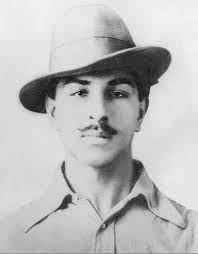
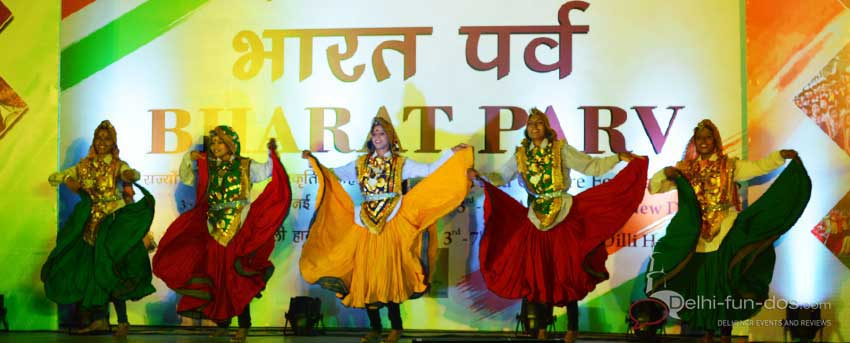
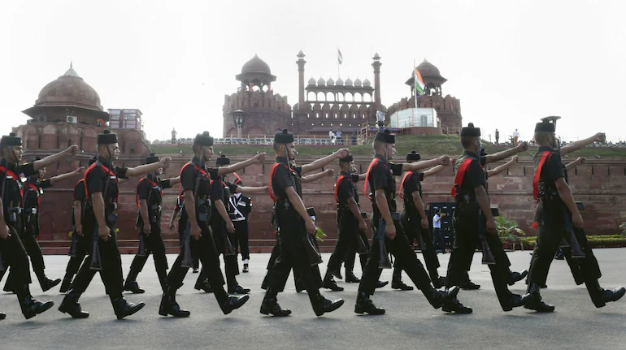

Events
Vande Bharatam

Vande Bharatam - Nritya Utsav, an all-India dance competition is an initiative taken by the Ministry of Culture as part of Republic Day Celebrations 2023 and under the aegis of Azadi ka Amrit Mahotsav to work towards promoting the spirit of 'Jan Bhagidari', while also showcasing India's vibrancy thorough its dance.
Bharat Parv

The six - day mega event “Bharat Parv” event is being organized by the Government of India from 26th to 31st January, 2023, as part of the Republic Day Celebrations.
Parade

Parades and pageants showcase scenes from the independence struggle and India's diverse cultural traditions. Similar events take place in state capitals where the Chief Ministers of individual states unfurl the national flag, followed by parades and pageants.